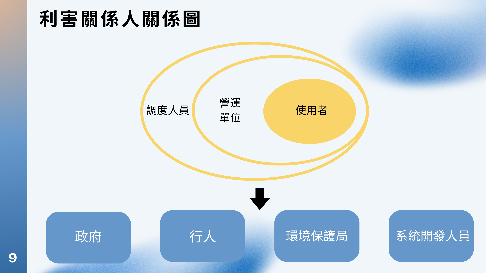
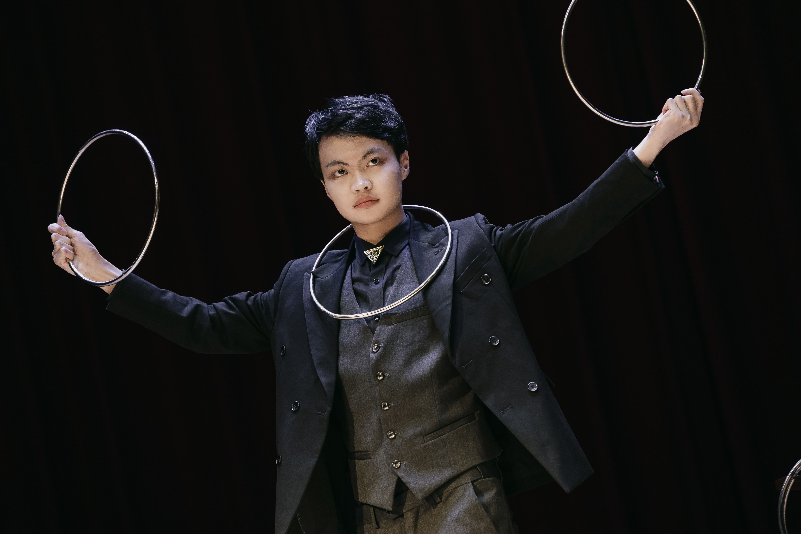
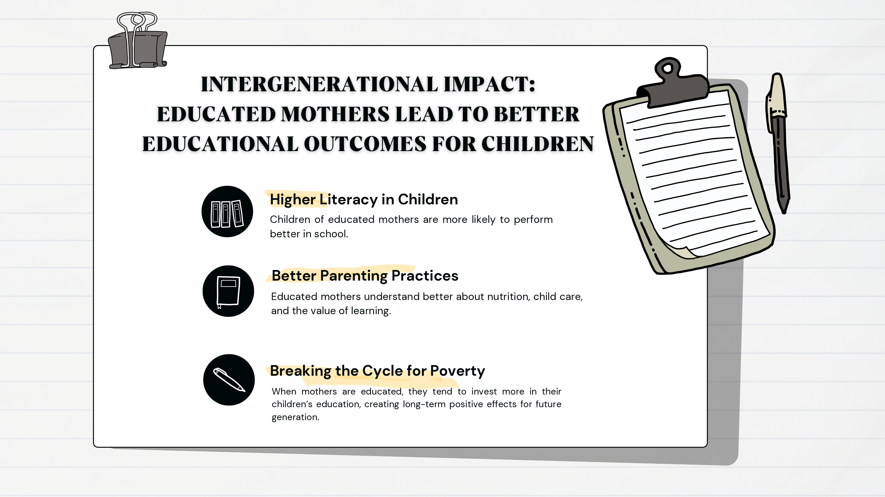
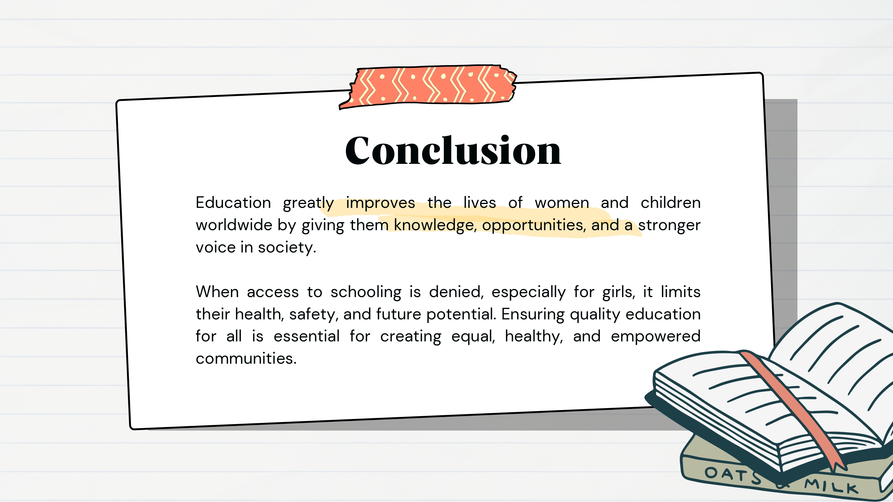

馮輝帆
We Can't Control What Happens To Us, Only How It Affects Us And The Choices We Make
We Can't Control What Happens To Us, Only How It Affects Us And The Choices We Make
對我來說，跟人相處最重要的是尊重，所以我會先聽別人說什麼，不急著表達自己，也不會在情緒上來的時候講話。這樣的個性讓我比較能理解別人，也讓身邊的人跟我相處起來比較自在。 平常我很喜歡做甜點，從準備到完成的過程對我來說很療癒，也讓我變得更有耐心。看到別人吃得開心，我也很有成就感。另外我也喜歡魔術，因為它可以帶給人驚喜，也讓我訓練觀察力跟表達能力。
資訊管理課程專案
這是資訊管理課程小組所做的專案，大家分工明確，有人上網找案例、有人負責爬蟲、也有人負責隱藏利害關係人分析等，每個禮拜都會開會討論，如果有人遇到困難會給予建議或是幫助，大家也會互相檢查其他人負責的部分有沒有可以改善的地方，我是大二加選進這個大三的課程，一開始的確很吃力，但幸虧組員的支持與幫我讓我慢慢跟上進度，也在過程中學到了很多實務上的經驗。不只是技術層面，像是資料蒐集、分析方法，還有團隊合作與溝通能力都有明顯的提升。(目前是專案的階段1)
📄 查看報告


社團活動
這是我大一時的魔術社成發，雖然程序跟手法都已經練到變成肌肉記憶了，但是實際上台的時候還是非常緊張，一路上也認識了許多志同道合的同伴，活動前的各種確認、彩排、活動當天都離不開他們的幫助。

課程專案
我們sdgs報告有跟外籍學生一組，所以不只報告時，平常的交流與討論也是以英文來溝通，我很容易因為緊張就說得不太順暢，但其他的組員害是耐心地了解我想表達的東西，隨著時間過去我們基本上沒什麼交流的問題了，我想有部分原因是平常練習的對話很有用，另一部分應蓋就是我們培養出的默契了。
📄 查看報告


多益
755培力英檢
B1商業英檢
Level 4